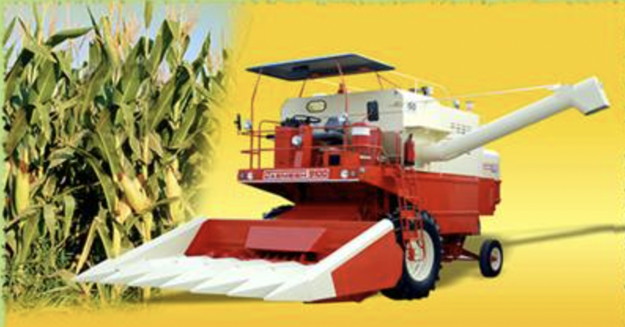

8.0 ਵਾਢੀ ਦਾ ਉਪਕਰਨ
- 8.1. ਸਵੈ-ਚਾਲਿਤ ਰਾਈਡਿੰਗ ਦੀ ਕਿਸਮ ਵਰਟੀਕਲ ਕਨਵੇਅਰ ਰੀਪਰ
- 8.2 ਟਰੈਕਟਰ ਮਾਊਂਟ ਕੀਤਾ ਵਰਟੀਕਲ ਕਨਵੇਅਰ ਰੀਪਰ
- 8.3 ਸਵੈ-ਚਾਲਿਤ ਕੰਬਾਈਨ ਹਾਰਵੈਸਟਰ
- 8.4. ਮੱਕੀ ਲਈ ਸਵੈ-ਚਾਲਿਤ ਕੰਬਾਈਨ ਹਾਰਵੈਸਟਰ
- 8.5 ਸਵੈ-ਚਾਲਿਤ ਰੀਪਰ ਬਾਇੰਡਰ
- 8.6 ਤੂੜੀ ਬਲੇਰ
- 8.7 ਸਟ੍ਰਾ ਰੀਪਰ/ਸਟਰਾ ਕੰਬਾਈਨ
- 8.8 ਆਲੂ ਖੋਦਣ ਵਾਲਾ-ਲਿਫਟ
8.1 ਸਵੈ-ਚਾਲਿਤ ਰਾਈਡਿੰਗ ਟਾਈਪ ਵਰਟੀਕਲ ਕਨਵੇਅਰ ਰੀਪਰ

ਵਿਸ਼ੇਸ਼ਤਾਵਾਂ
ਇਹ ਇੱਕ ਇੰਜਣ ਦੁਆਰਾ ਚਲਾਇਆ ਜਾਂਦਾ ਹੈ, ਸੀਰੀਅਲ ਅਤੇ ਤੇਲ ਬੀਜ ਫਸਲਾਂ ਦੀ ਵਾਢੀ ਅਤੇ ਵਾਢੀ ਲਈ ਢੁਕਵੇਂ ਕਿਸਮ ਦੇ ਹਾਰਵੈਸਟਰ ਦੇ ਪਿੱਛੇ ਚੱਲਦਾ ਹੈ। ਰੀਪਰ ਵਿੱਚ ਇੰਜਣ, ਪਾਵਰ ਟਰਾਂਸਮਿਸ਼ਨ ਬਾਕਸ, ਨਿਊਮੈਟਿਕ ਵ੍ਹੀਲਜ਼, ਕਟਰ ਬਾਰ, ਕ੍ਰੌਪ ਰੋ ਡਿਵਾਈਡਰ, ਲਗਜ਼ ਨਾਲ ਕਨਵੇਅਰ ਬੈਲਟਸ, ਸਟਾਰ ਵ੍ਹੀਲਜ਼, ਓਪਰੇਟਿੰਗ ਕੰਟਰੋਲ ਅਤੇ ਇੱਕ ਮਜ਼ਬੂਤ ਫਰੇਮ ਸ਼ਾਮਲ ਹੁੰਦੇ ਹਨ। ਇੰਜਣ ਦੀ ਸ਼ਕਤੀ ਨੂੰ ਬੈਲਟ ਪੁਲੀ ਦੁਆਰਾ ਕਟਰ ਬਾਰ ਅਤੇ ਕਨਵੇਅਰ ਬੈਲਟਾਂ ਵਿੱਚ ਸੰਚਾਰਿਤ ਕੀਤਾ ਜਾਂਦਾ ਹੈ। ਰੀਪਰ ਦੀ ਅੱਗੇ ਦੀ ਗਤੀ ਦੇ ਦੌਰਾਨ, ਫਸਲੀ ਕਤਾਰ ਦੇ ਵਿਭਾਜਕ ਫਸਲ ਨੂੰ ਵੰਡਦੇ ਹਨ, ਜੋ ਕਟਰ ਬਾਰ ਦੇ ਸੰਪਰਕ ਵਿੱਚ ਆਉਂਦੇ ਹਨ, ਜਿੱਥੇ ਫਸਲ ਦੇ ਤਣੇ ਦੀ ਕਟਾਈ ਹੁੰਦੀ ਹੈ। ਕੱਟੀ ਹੋਈ ਫਸਲ ਨੂੰ ਮਸ਼ੀਨ ਦੇ ਇੱਕ ਪਾਸੇ ਕਨਵੇਅਰ ਬੈਲਟ ਦੁਆਰਾ ਲੱਗਾਂ ਨਾਲ ਫਿੱਟ ਕੀਤਾ ਜਾਂਦਾ ਹੈ ਅਤੇ ਖੇਤ ਵਿੱਚ ਹਵਾ ਵਿੱਚ ਸੁੱਟਿਆ ਜਾਂਦਾ ਹੈ। ਫਸਲ ਨੂੰ ਹੱਥੀਂ ਬੰਡਲ ਕੀਤਾ ਜਾਂਦਾ ਹੈ ਅਤੇ ਥਰੈਸਿੰਗ ਯਾਰਡ ਵਿੱਚ ਲਿਜਾਇਆ ਜਾਂਦਾ ਹੈ। ਫਸਲ ਦੀ ਖੜ੍ਹੀ ਵਾਹੁਣ ਕਾਰਨ ਕੋਈ ਨੁਕਸਾਨ ਨਹੀਂ ਹੁੰਦਾ
ਨਿਰਧਾਰਨ:
| ਮਾਪ (LxWxH)(mm) | : 2450 x 1200 x 1000 |
| ਭਾਰ (ਕਿਲੋ) | : 145 |
| ਫਸਲ ਵੰਡਣ ਵਾਲਿਆਂ ਦੀ ਸੰਖਿਆ | : 4 |
| ਕਟਰ ਬਾਰ ਦੀ ਲੰਬਾਈ (ਮਿਲੀਮੀਟਰ) | : 1000 |
| ਕਟਰ ਬਾਰ ਪਿੱਚ (ਮਿਲੀਮੀਟਰ) | : 75 |
| ਸਟ੍ਰੋਕ ਦੀ ਸੰਖਿਆ/ਮਿੰਟ | : 700 (0.8 m/s ਔਸਤ ਗਤੀ) |
| ਪਾਵਰ ਲੋੜ (hp/kW) | : 5/3.75, ਡੀਜ਼ਲ ਇੰਜਣ |
ਵਰਤੋਂ:
ਇਹ ਚਾਵਲ, ਕਣਕ, ਸੋਇਆਬੀਨ ਅਤੇ ਹੋਰ ਅਨਾਜ ਅਤੇ ਤੇਲ ਬੀਜਾਂ ਦੀ ਕਟਾਈ ਲਈ ਢੁਕਵਾਂ ਹੈ। ਇਸ ਰੀਪਰ ਦਾ ਮੁੱਖ ਫਾਇਦਾ ਇਹ ਹੈ ਕਿ ਇਸ ਵਿੱਚ ਰੀਲ ਨਾ ਹੋਣ ਕਾਰਨ ਕੋਈ ਵੀ ਨੁਕਸਾਨ ਨਹੀਂ ਹੁੰਦਾ। ਇਹ ਫਸਲ ਨੂੰ ਖਿੜਕੀ ਵਿੱਚ ਸੁੱਟ ਦਿੰਦਾ ਹੈ ਅਤੇ ਇਸ ਲਈ ਇਸਨੂੰ ਆਸਾਨੀ ਨਾਲ ਇਕੱਠਾ ਕੀਤਾ ਜਾ ਸਕਦਾ ਹੈ।
ਮਸ਼ੀਨ ਦੀ ਕੀਮਤ: 80,000/- ਰੁਪਏ
8.2 ਟਰੈਕਟਰ ਮਾਊਂਟ ਕੀਤਾ ਵਰਟੀਕਲ ਕਨਵੇਅਰ ਰੀਪਰ

ਮਸ਼ੀਨ ਵਿੱਚ ਇੱਕ 76 ਮਿਲੀਮੀਟਰ ਦੀ ਪਿਚ ਰਿਸੀਪ੍ਰੋਕੇਟਿੰਗ ਕਟਰ ਬਾਰ ਅਸੈਂਬਲੀ, ਸੱਤ ਕ੍ਰੌਪ ਰੋ ਡਿਵਾਈਡਰ, ਅਤੇ ਪਾਵਰ ਟਰਾਂਸਮਿਸ਼ਨ ਸਿਸਟਮ ਲਈ ਲਗਜ਼, ਪ੍ਰੈਸ਼ਰ ਸਪ੍ਰਿੰਗਜ਼, ਪਲਲੀਜ਼ ਅਤੇ ਗੀਅਰਬਾਕਸ ਨਾਲ ਫਿੱਟ ਕੀਤੇ ਦੋ ਵਰਟੀਕਲ ਕਨਵੇਅਰ ਬੈਲਟ ਸ਼ਾਮਲ ਹਨ। ਫਸਲ ਕਤਾਰ ਦੇ ਡਿਵਾਈਡਰ ਕਟਰ ਬਾਰ ਅਸੈਂਬਲੀ ਦੇ ਸਾਹਮਣੇ ਫਿੱਟ ਕੀਤੇ ਜਾਂਦੇ ਹਨ ਅਤੇ ਸਟਾਰ ਵ੍ਹੀਲ ਫਸਲ ਕਤਾਰ ਦੇ ਡਿਵਾਈਡਰਾਂ ਉੱਤੇ ਮਾਊਂਟ ਕੀਤੇ ਜਾਂਦੇ ਹਨ। ਮਸ਼ੀਨ ਨੂੰ ਟਰੈਕਟਰ ਦੇ ਅੱਗੇ ਮਾਊਂਟ ਕੀਤਾ ਜਾਂਦਾ ਹੈ ਅਤੇ ਮਸ਼ੀਨ ਨੂੰ ਪਾਵਰ ਟਰੈਕਟਰ ਪੀਟੀਓ ਤੋਂ ਟਰੈਕਟਰ ਦੀ ਚੈਸੀ ਦੇ ਹੇਠਾਂ ਚੱਲ ਰਹੇ ਵਿਚਕਾਰਲੇ ਸ਼ਾਫਟ ਅਤੇ ਇੱਕ ਕਪਲਿੰਗ ਸ਼ਾਫਟ ਦੀ ਮਦਦ ਨਾਲ ਦਿੱਤੀ ਜਾਂਦੀ ਹੈ। ਜ਼ਮੀਨ ਤੋਂ ਉੱਪਰ ਵਾਲੀ ਮਸ਼ੀਨ ਦੀ ਉਚਾਈ ਨੂੰ ਟਰੈਕਟਰ ਹਾਈਡ੍ਰੌਲਿਕਸ ਦੁਆਰਾ ਪੁਲੀ ਅਤੇ ਸਟੀਲ ਦੀਆਂ ਰੱਸੀਆਂ ਦੀ ਮਦਦ ਨਾਲ ਕੰਟਰੋਲ ਕੀਤਾ ਜਾਂਦਾ ਹੈ। ਕਟਰ ਬਾਰ ਦੁਆਰਾ ਫਸਲ ਨੂੰ ਕੱਟਣ ਤੋਂ ਬਾਅਦ, ਇਸਨੂੰ ਇੱਕ ਖੜ੍ਹਵੀਂ ਸਥਿਤੀ ਵਿੱਚ ਰੱਖਿਆ ਜਾਂਦਾ ਹੈ ਅਤੇ ਮਸ਼ੀਨ ਦੇ ਇੱਕ ਪਾਸੇ ਲੁਗਡ ਬੈਲਟ ਕਨਵੇਅਰਾਂ ਦੁਆਰਾ ਫਸਲ ਨੂੰ ਡਿਲੀਵਰ ਕੀਤਾ ਜਾਂਦਾ ਹੈ ਅਤੇ ਇੱਕ ਖਿੜਕੀ ਦੇ ਰੂਪ ਵਿੱਚ ਜ਼ਮੀਨ 'ਤੇ ਡਿੱਗਦਾ ਹੈ ਜੋ ਇਸ ਦੀ ਗਤੀ ਦੀ ਦਿਸ਼ਾ ਵਿੱਚ ਲੰਬਵਤ ਹੁੰਦਾ ਹੈ। ਮਸ਼ੀਨ।
ਨਿਰਧਾਰਨ:
| ਸਟਾਰ ਪਹੀਏ ਦੀ ਸੰਖਿਆ | : 7 |
| ਸਟਾਰ ਵ੍ਹੀਲ ਦਾ ਵਿਆਸ (ਮਿਲੀਮੀਟਰ) | : 270-282 |
| ਪ੍ਰਭਾਵਸ਼ਾਲੀ ਕਟਰ ਬਾਰ ਚੌੜਾਈ (ਮਿਲੀਮੀਟਰ) | : 2000-2210 |
| ਗਾਰਡ ਸਪੇਸਿੰਗ (ਮਿਲੀਮੀਟਰ) | : 70-80 |
| ਕਟਰ ਬਾਰ ਸਟ੍ਰੋਕ ਦੀ ਲੰਬਾਈ (ਮਿਲੀਮੀਟਰ) | : 75-80 |
| ਸਟ੍ਰੋਕ ਪ੍ਰਤੀ ਮਿੰਟ | : 388-675 |
| ਬੈਲਟ ਕਨਵੇਅਰ ਦਾ ਆਕਾਰ (ਸੈ.ਮੀ.) | : 2-3 ਪਲਾਈ |
| ਬੈਲਟ ਦੀ ਚੌੜਾਈ (ਮਿਲੀਮੀਟਰ) | : 55-60 |
| ਕਨਵੇਅਰ ਪੁਲੀ ਦਾ ਵਿਆਸ (ਮਿਲੀਮੀਟਰ) | : 118-140 |
| ਕਟਰ ਬਾਰ ਦੀ ਲੰਬਾਈ (ਮਿਲੀਮੀਟਰ) | : 1600-2010 |
| ਭਾਰ (ਕਿਲੋ) | : 197-350 |
| ਪਾਵਰ ਸਰੋਤ (hp/kW) | : 35/26.5, ਟਰੈਕਟਰ |
ਵਰਤੋਂ:
ਵਰਟੀਕਲ ਕਨਵੇਅਰ ਰੀਪਰ ਦੀ ਵਰਤੋਂ ਕਣਕ ਅਤੇ ਝੋਨੇ ਦੀਆਂ ਫਸਲਾਂ ਦੀ ਵਾਢੀ ਅਤੇ ਵਾਢੀ ਲਈ ਕੀਤੀ ਜਾਂਦੀ ਹੈ।
ਮਸ਼ੀਨ ਦੀ ਕੀਮਤ: 45,000/- ਰੁਪਏ
8.3 ਸਵੈ-ਚਾਲਿਤ ਕੰਬਾਈਨ ਹਾਰਵੈਸਟਰ

ਵਿਸ਼ੇਸ਼ਤਾਵਾਂ
ਕੰਬਾਈਨ ਹਾਰਵੈਸਟਰ ਵਿੱਚ ਕਟਿੰਗ ਯੂਨਿਟ, ਥਰੈਸ਼ਿੰਗ ਯੂਨਿਟ ਅਤੇ ਸਫਾਈ ਅਤੇ ਅਨਾਜ ਸੰਭਾਲਣ ਵਾਲੀਆਂ ਇਕਾਈਆਂ ਸ਼ਾਮਲ ਹੁੰਦੀਆਂ ਹਨ। ਕੱਟਣ ਵਾਲੇ ਭਾਗ ਵਿੱਚ ਰੀਲ, ਕਟਰ ਬਾਰ, ਇੱਕ ਆਗਰ ਅਤੇ ਇੱਕ ਫੀਡਰ ਕਨਵੇਅਰ ਸ਼ਾਮਲ ਹਨ। ਥਰੈਸ਼ਿੰਗ ਸੈਕਸ਼ਨ ਵਿੱਚ ਥ੍ਰੈਸ਼ਿੰਗ ਸਿਲੰਡਰ, ਕੰਕੈਵ ਅਤੇ ਸਿਲੰਡਰ ਬੀਟਰ ਹਨ। ਸਫਾਈ ਸੈਕਸ਼ਨ ਵਿੱਚ ਮੁੱਖ ਤੌਰ 'ਤੇ ਵਾਕਰ, ਚੈਫਰ ਸਿਵੀ, ਅਨਾਜ ਇਕੱਠਾ ਕਰਨ ਵਾਲਾ ਪੈਨ ਹੁੰਦਾ ਹੈ। ਅਨਾਜ ਸੰਭਾਲਣ ਵਾਲੇ ਭਾਗ ਵਿੱਚ ਇੱਕ ਅਨਾਜ ਐਲੀਵੇਟਰ ਅਤੇ ਇੱਕ ਡਿਸਚਾਰਜ ਔਗਰ ਸ਼ਾਮਲ ਹੁੰਦਾ ਹੈ। ਕੱਟਣ ਤੋਂ ਬਾਅਦ ਫਸਲ ਨੂੰ ਫੀਡਰ ਕਨਵੇਅਰ ਰਾਹੀਂ ਸਿਲੰਡਰ ਅਤੇ ਕੰਕੈਵ ਅਸੈਂਬਲੀ ਵਿੱਚ ਪਹੁੰਚਾਇਆ ਜਾਂਦਾ ਹੈ ਜਿੱਥੇ ਇਸ ਨੂੰ ਥਰੈਸ ਕੀਤਾ ਜਾਂਦਾ ਹੈ ਅਤੇ ਅਨਾਜ ਅਤੇ ਤੂੜੀ ਨੂੰ ਵੱਖ-ਵੱਖ ਭਾਗਾਂ ਵਿੱਚ ਵੱਖ ਕੀਤਾ ਜਾਂਦਾ ਹੈ। ਅਨਾਜ ਨੂੰ ਸਿੱਧਾ ਟਰਾਲੀ ਵਿੱਚ ਲੋਡ ਕੀਤਾ ਜਾ ਸਕਦਾ ਹੈ। ਇਨ੍ਹਾਂ ਦੀ ਵਰਤੋਂ ਉਤਰਾਂਚਲ ਦੇ ਹੇਠਲੇ ਹਿੱਸੇ ਵਿੱਚ ਕੀਤੀ ਜਾ ਰਹੀ ਹੈ।
ਨਿਰਧਾਰਨ:
| ਕਟਰ ਬਾਰ ਦੀ ਲੰਬਾਈ (ਮਿਲੀਮੀਟਰ) | : 4300 |
| ਕੱਟਣ ਦੀ ਉਚਾਈ (ਮਿਲੀਮੀਟਰ) | : 550-1250 |
| ਥਰੈਸਿੰਗ ਡਰੱਮ ਵਿਆਸ (ਮਿਲੀਮੀਟਰ) | : 605 |
| ਥਰੈਸਿੰਗ ਡਰੱਮ ਦੀ ਲੰਬਾਈ (ਮਿਲੀਮੀਟਰ) | : 1240 |
| ਥਰੈਸਿੰਗ ਡਰੱਮ ਸਪੀਡ (rpm) | : 540-1050 |
| ਉਪਰਲੀ ਸਿਵੀ ਦੀ ਲੰਬਾਈ (ਮਿਲੀਮੀਟਰ) | : 1240 |
| ਉਪਰਲੀ ਸਿਵੀ ਦੀ ਚੌੜਾਈ (ਮਿਲੀਮੀਟਰ) | : 1215 |
| ਹੇਠਲੀ ਸਿਵੀ ਦੀ ਲੰਬਾਈ (ਮਿਲੀਮੀਟਰ) | : 1240 |
| ਹੇਠਲੇ ਸਿਈਵੀ ਦੀ ਚੌੜਾਈ (ਮਿਲੀਮੀਟਰ) | : 1215 |
| ਅਨਾਜ ਟੈਂਕ ਦੀ ਸਮਰੱਥਾ (ਘਣ ਮੀਟਰ) | : 3.28 |
| Road speeds (km/h) | : 2 -11.4 |
| ਭਾਰ (ਕਿਲੋ) | : 8200 |
| ਪਾਵਰ ਸਰੋਤ (hp/kW) | : 90-110, ਟਰੈਕਟਰ |
ਵਰਤੋਂ:
ਕੰਬਾਈਨਾਂ ਦੀ ਵਰਤੋਂ ਇੱਕ ਕਾਰਵਾਈ ਵਿੱਚ ਅਨਾਜ ਅਤੇ ਹੋਰ ਫਸਲਾਂ ਦੀ ਕਟਾਈ, ਥਰੈਸਿੰਗ, ਸਫਾਈ ਲਈ ਕੀਤੀ ਜਾਂਦੀ ਹੈ।
ਮਸ਼ੀਨ ਦੀ ਕੀਮਤ: 14-16 ਲੱਖ ਰੁਪਏ
8.4 ਮੱਕੀ ਲਈ ਸਵੈ-ਚਾਲਿਤ ਕੰਬਾਈਨ ਹਾਰਵੈਸਟਰ
ਵਿਸ਼ੇਸ਼ਤਾਵਾਂ
ਕੰਬਾਈਨ ਹਾਰਵੈਸਟਰ ਵਿੱਚ ਕਟਿੰਗ ਯੂਨਿਟ, ਥਰੈਸ਼ਿੰਗ ਯੂਨਿਟ ਅਤੇ ਸਫਾਈ ਅਤੇ ਅਨਾਜ ਸੰਭਾਲਣ ਵਾਲੇ ਯੂਨਿਟ ਹੁੰਦੇ ਹਨ। ਕਟਿੰਗ ਸੈਕਸ਼ਨ ਵਿਸ਼ੇਸ਼ ਤੌਰ 'ਤੇ ਮੱਕੀ ਦੀ ਫ਼ਸਲ ਦੀ ਕਟਾਈ ਲਈ ਤਿਆਰ ਕੀਤਾ ਗਿਆ ਹੈ ਅਤੇ ਸਿਰਲੇਖ ਨੂੰ ਰਵਾਇਤੀ ਅਨਾਜ ਦੇ ਕੰਬਾਈਨਾਂ ਵਿੱਚ ਫਿੱਟ ਕੀਤਾ ਜਾ ਸਕਦਾ ਹੈ। ਥਰੈਸ਼ਿੰਗ ਸੈਕਸ਼ਨ ਵਿੱਚ ਥ੍ਰੈਸ਼ਿੰਗ ਸਿਲੰਡਰ, ਕੰਕੈਵ ਅਤੇ ਸਿਲੰਡਰ ਬੀਟਰ ਹਨ। ਸਫਾਈ ਸੈਕਸ਼ਨ ਵਿੱਚ ਮੁੱਖ ਤੌਰ 'ਤੇ ਵਾਕਰ, ਚੈਫਰ ਸਿਵੀ, ਅਨਾਜ ਇਕੱਠਾ ਕਰਨ ਵਾਲਾ ਪੈਨ ਹੁੰਦਾ ਹੈ। ਅਨਾਜ ਸੰਭਾਲਣ ਵਾਲੇ ਭਾਗ ਵਿੱਚ ਇੱਕ ਅਨਾਜ ਐਲੀਵੇਟਰ ਅਤੇ ਇੱਕ ਡਿਸਚਾਰਜ ਔਗਰ ਸ਼ਾਮਲ ਹੁੰਦਾ ਹੈ। ਕੱਟਣ ਤੋਂ ਬਾਅਦ ਫਸਲ ਨੂੰ ਫੀਡਰ ਕਨਵੇਅਰ ਰਾਹੀਂ ਸਿਲੰਡਰ ਅਤੇ ਕੰਕੈਵ ਅਸੈਂਬਲੀ ਵਿੱਚ ਪਹੁੰਚਾਇਆ ਜਾਂਦਾ ਹੈ ਜਿੱਥੇ ਇਸ ਨੂੰ ਥਰੈਸ ਕੀਤਾ ਜਾਂਦਾ ਹੈ ਅਤੇ ਅਨਾਜ ਅਤੇ ਤੂੜੀ ਨੂੰ ਵੱਖ-ਵੱਖ ਭਾਗਾਂ ਵਿੱਚ ਵੱਖ ਕੀਤਾ ਜਾਂਦਾ ਹੈ।
ਨਿਰਧਾਰਨ:
| ਕਟਰ ਬਾਰ ਦੀ ਚੌੜਾਈ (ਮਿਲੀਮੀਟਰ) | : 3650 |
| ਕੱਟਣ ਦੀ ਉਚਾਈ (ਮਿਲੀਮੀਟਰ) | : 100- 1000 |
| ਕਤਾਰਾਂ ਦੀ ਸੰਖਿਆ | : 5/7 |
| ਕਤਾਰ ਵਿੱਥ (ਮਿਲੀਮੀਟਰ) | : 460- 685 |
| ਥਰੈਸਿੰਗ ਡਰੱਮ ਦਾ ਆਕਾਰ, ਦੀਆ। x ਲੰਬਾਈ (ਮਿਲੀਮੀਟਰ) | : 600 x 1260 |
| ਥਰੈਸਿੰਗ ਡਰੱਮ ਦੀ ਕਿਸਮ | : ਰਾਸਪ ਬਾਰ |
| ਥਰੈਸਿੰਗ ਡਰੱਮ ਦੀ ਗਤੀ (rpm) | : 535 to 1210rpm |
| ਕੋਨਕੇਵ ਕਲੀਅਰੈਂਸ (ਮਿਲੀਮੀਟਰ) | : 3-16 |
| ਤੂੜੀ ਵਾਕਰਾਂ ਦੀ ਗਿਣਤੀ | : 5 |
| ਤੂੜੀ ਵਾਕਰਾਂ ਦਾ ਖੇਤਰ (m2) | : 0.89 |
| ਸਫਾਈ ਖੇਤਰ (m2) | : 25 |
| ਸਮੁੱਚਾ ਮਾਪ (L x B) (mm) | : 1500 x 4500 |
| ਘੱਟੋ-ਘੱਟ ਗਰਾਊਂਡ ਕਲੀਅਰੈਂਸ (ਮਿਲੀਮੀਟਰ) | : 460 |
| ਭਾਰ (ਕਿਲੋਗ੍ਰਾਮ)। | : 9000 |
| ਕੰਮ ਕਰਨ ਦੀ ਸਮਰੱਥਾ (ha/h) | : 1.00 |
| ਪਾਵਰ ਲੋੜ (hp/kW) | : 75-110 56-82, ਇੰਜਣ |
ਵਰਤੋਂ:
ਮੱਕੀ ਦੀ ਕੰਬਾਈਨ ਮੱਕੀ ਦੀ ਕਟਾਈ, ਥਰੈਸਿੰਗ ਅਤੇ ਸਫਾਈ ਲਈ ਵਰਤੀ ਜਾਂਦੀ ਹੈ ਅਤੇ ਸਿਰਲੇਖ ਨੂੰ ਬਦਲ ਕੇ ਇੱਕ ਕਾਰਵਾਈ ਵਿੱਚ ਹੋਰ ਅਨਾਜ ਦੀਆਂ ਫਸਲਾਂ ਦੀ ਕਟਾਈ ਲਈ ਵਰਤੀ ਜਾ ਸਕਦੀ ਹੈ।
ਲਾਗਤ: 12-14 ਲੱਖ ਰੁਪਏ
8.5 ਸਵੈ-ਪ੍ਰੋਪੇਲਡ ਰੀਪਰ ਬਾਈਂਡਰ

ਵਿਸ਼ੇਸ਼ਤਾਵਾਂ
ਰੀਪਰ-ਬਾਇੰਡਰ ਇੱਕ ਵਿਲੱਖਣ ਵਾਢੀ ਮਸ਼ੀਨ ਹੈ ਜੋ ਫਸਲ ਦੀ ਵੱਢਣ ਦੇ ਨਾਲ-ਨਾਲ ਇਸ ਨੂੰ ਬੰਨ੍ਹਦੀ ਹੈ। ਇਹ ਨਵੀਨਤਾਕਾਰੀ ਮਕੈਨੀਕਲ ਮਸ਼ੀਨ ਇੱਕ ਹੈਰਾਨੀਜਨਕ ਤੌਰ 'ਤੇ ਕੰਮ ਦੀ ਘੱਟ ਲਾਗਤ 'ਤੇ ਮਾਮੂਲੀ ਅਨਾਜ ਦੇ ਨੁਕਸਾਨ ਦੇ ਨਾਲ ਤੂੜੀ ਦੀ 100% ਰਿਕਵਰੀ ਯਕੀਨੀ ਬਣਾਉਂਦੀ ਹੈ। ਇਹ ਮਸ਼ੀਨ ਮੁੱਖ ਤੌਰ 'ਤੇ ਕਣਕ, ਝੋਨਾ, ਜਵੀ, ਜੌਂ ਅਤੇ ਹੋਰ ਅਨਾਜ ਦੀਆਂ ਫ਼ਸਲਾਂ ਵਿੱਚ ਵਰਤੀ ਜਾਂਦੀ ਹੈ।
ਨਿਰਧਾਰਨ:
| ਕੱਟ ਦੀ ਚੌੜਾਈ(m) | : 12 |
| ਕੱਟ ਦੀ ਉਚਾਈ (ਸੈ.ਮੀ.) | : 3 to 5 |
| ਇੰਜਣ (hp/kW) | : 10.2 7.5, ਏਅਰ ਕੂਲਡ ਡੀਜ਼ਲ |
| ਗੇਅਰ | : 4 ਅੱਗੇ ਅਤੇ 1 ਉਲਟਾ |
| ਮਸ਼ੀਨ ਦਾ ਭਾਰ (ਕਿਲੋਗ੍ਰਾਮ) | : 400 |
ਵਰਤੋਂ:
- ਇੱਕ ਹੀ ਕਾਰਵਾਈ ਵਿੱਚ ਅਨਾਜ ਦੀ ਫ਼ਸਲ ਦੀ ਵਾਢੀ ਅਤੇ ਬਾਈਡਿੰਗ।
- 85 ਤੋਂ 110 ਸੈਂਟੀਮੀਟਰ ਤੱਕ ਦੀ ਉਚਾਈ ਵਾਲੇ ਅਨਾਜ ਦੀਆਂ ਫਸਲਾਂ ਲਈ ਵਰਤਿਆ ਜਾਂਦਾ ਹੈ।
- ਸਿਰਫ 1 ਲੀਟਰ ਡੀਜ਼ਲ ਦੀ ਖਪਤ ਨਾਲ 1 ਘੰਟੇ ਵਿੱਚ 1 ਏਕੜ ਖੇਤ ਦੀ ਵਾਢੀ ਅਤੇ ਬਾਈਡਿੰਗ।
- ਬਰਸੀਮ, ਮੈਂਥਾ, ਲੂਸਰਨ, ਝੋਨੇ ਦੇ ਨਾੜ ਅਤੇ ਹੋਰ ਚਾਰੇ ਦੀਆਂ ਫਸਲਾਂ ਦੀ ਕਟਾਈ ਲਈ ਕਟਰ ਬਾਰ ਵੀ ਉਸੇ ਮਸ਼ੀਨ ਨਾਲ ਨੱਥੀ ਕੀਤੀ ਜਾ ਸਕਦੀ ਹੈ।
ਮਸ਼ੀਨ ਦੀ ਕੀਮਤ: 2,00,000/- ਰੁਪਏ
8.6 ਸਟ੍ਰਾ ਬੇਲਰ

ਵਿਸ਼ੇਸ਼ਤਾਵਾਂ
ਟਰੈਕਟਰ PTO ਸੰਚਾਲਿਤ ਮਸ਼ੀਨ ਵਿੱਚ ਰੀਲ ਕਿਸਮ ਦੀ ਸਟਰਾ ਪਿਕਅੱਪ ਅਸੈਂਬਲੀ, ਅਤੇ ਸਟ੍ਰਾ ਕੰਪੈਕਸ਼ਨ ਅਤੇ ਬੰਨ੍ਹਣ ਵਾਲੀਆਂ ਇਕਾਈਆਂ ਸ਼ਾਮਲ ਹੁੰਦੀਆਂ ਹਨ। ਇਹ ਰੀਲ ਦੀ ਮਦਦ ਨਾਲ ਖੇਤ ਵਿੱਚੋਂ ਰਹਿੰਦ-ਖੂੰਹਦ ਨੂੰ ਆਪਣੇ ਆਪ ਹੀ ਚੁੱਕ ਲੈਂਦਾ ਹੈ ਜਿਸ ਨੂੰ ਫੀਡਰ ਦੀ ਮਦਦ ਨਾਲ ਬੈਲ ਚੈਂਬਰ ਵਿੱਚ ਤਬਦੀਲ ਕੀਤਾ ਜਾਂਦਾ ਹੈ ਅਤੇ ਫਿਰ ਤੂੜੀ ਨੂੰ ਇੱਕ ਸੰਖੇਪ ਵੇਰੀਏਬਲ ਲੰਬਾਈ ਦੇ ਆਕਾਰ ਵਿੱਚ ਰਿਸੀਪ੍ਰੋਕੇਟਿੰਗ ਰੈਮ ਨਾਲ ਸੰਕੁਚਿਤ ਕੀਤਾ ਜਾਂਦਾ ਹੈ। ਇਹ ਧਾਤ ਦੀ ਤਾਰ ਜਾਂ ਨਾਈਲੋਨ ਰੱਸੀ ਦੀ ਵਰਤੋਂ ਕਰਕੇ ਆਪਣੇ ਆਪ ਗੰਢਾਂ ਨੂੰ ਵੀ ਬੰਨ੍ਹਦਾ ਹੈ।
ਨਿਰਧਾਰਨ:
| ਲੰਬਾਈ (ਮਿਲੀਮੀਟਰ) | : 5550 |
| ਚੌੜਾਈ (ਮਿਲੀਮੀਟਰ) | : 2600 |
| ਉਚਾਈ (ਮਿਲੀਮੀਟਰ) | : 1950 |
| ਪਿਕ-ਅੱਪ ਰੀਲ ਦੀ ਚੌੜਾਈ | : 1540 |
| ਗੰਢਾਂ ਦੀ ਗਿਣਤੀ | : 2 |
| ਬੈਲ ਚੈਂਬਰ ਦਾ ਕਰਾਸ ਸੈਕਸ਼ਨ (ਮਿਲੀਮੀਟਰ) | : 400 x 460 |
| ਟਵਿਨ ਬਾਕਸ ਸਮਰੱਥਾ | : ਚਾਰ ਚੱਮਚ |
| ਪਲੰਜਰ ਸਟਰੋਕ ਦੀ ਗਿਣਤੀ ਪ੍ਰਤੀ ਮਿੰਟ | : 2000 ਇੰਜਣ rpm 'ਤੇ 75 |
| ਪਲੰਜਰ ਸਟ੍ਰੋਕ ਦੀ ਲੰਬਾਈ (ਮਿਲੀਮੀਟਰ) | : 764 |
| ਵ੍ਹੀਲ ਟ੍ਰੇਡ (ਮਿਲੀਮੀਟਰ) | : 2100 |
| ਫਲਾਈਵ੍ਹੀਲ ਵਿਆਸ (ਮਿਲੀਮੀਟਰ) | : 560 |
| ਪਾਵਰ ਸਰੋਤ (hp/kW) | : 35/26.5 ਜਾਂ ਇਸ ਤੋਂ ਉੱਪਰ ਦਾ ਟਰੈਕਟਰ |
ਵਰਤੋਂ:
ਤੂੜੀ ਦੇ ਬੇਲਰ ਆਇਤਾਕਾਰ ਕਰਾਸ ਸੈਕਸ਼ਨ ਦੀਆਂ ਗੰਢਾਂ ਵਿੱਚ ਤੂੜੀ ਨੂੰ ਬੇਲ ਕਰਨ ਲਈ ਵਰਤੇ ਜਾਂਦੇ ਹਨ।
ਮਸ਼ੀਨ ਦੀ ਕੀਮਤ: 5,00,000/- ਰੁਪਏ
8.7 ਸਟ੍ਰਾ ਰੀਪਰ/ ਸਟ੍ਰਾ ਕੰਬਾਈਨ

ਵਿਸ਼ੇਸ਼ਤਾਵਾਂ
ਟਰੈਕਟਰ ਪੀ.ਟੀ.ਓ ਦੁਆਰਾ ਚਲਾਈ ਜਾਣ ਵਾਲੀ ਤੂੜੀ ਵਾਲੀ ਕੰਬਾਈਨ ਵਿੱਚ ਕਟਰ ਬਾਰ ਰੀਲ, ਫੀਡਿੰਗ ਔਗਰ ਅਤੇ ਇੱਕ ਰਵਾਇਤੀ ਥਰੈਸ਼ਰ ਵਾਂਗ ਬਰੂਇੰਗ ਸਿਲੰਡਰ ਹੈ। ਅਨਾਜ ਦੀ ਕੰਬਾਈਨ ਦੁਆਰਾ ਸੁੱਟੀ ਗਈ ਤੂੜੀ ਅਤੇ ਪਰਾਲੀ ਨੂੰ ਤੂੜੀ ਦੀ ਕੰਬਾਈਨ ਦੁਆਰਾ ਇਕੱਠਾ ਕੀਤਾ ਜਾਂਦਾ ਹੈ ਅਤੇ ਸਿਲੰਡਰ ਦੇ ਕੰਕੈਵ ਸੈਕਸ਼ਨ ਵਿੱਚ ਪਹੁੰਚਾਇਆ ਜਾਂਦਾ ਹੈ, ਜਿੱਥੇ ਇਸਨੂੰ ਟੁਕੜਿਆਂ ਵਿੱਚ ਕੱਟਿਆ ਜਾਂਦਾ ਹੈ ਅਤੇ ਅਤਰ ਵਿੱਚੋਂ ਲੰਘਾਇਆ ਜਾਂਦਾ ਹੈ। ਕੰਬਾਈਨ ਹਾਰਵੈਸਟਰ ਦੁਆਰਾ ਖੜ੍ਹੀਆਂ ਪਰਾਲੀ ਨੂੰ ਕੱਟਣ ਅਤੇ ਤੂੜੀ ਦੇ ਉਸ ਹਿੱਸੇ ਨੂੰ ਕੱਟਣ ਲਈ ਇੱਕ ਪਰਸਪਰ ਕਟਰ ਬਾਰ ਦੀ ਵਰਤੋਂ ਕੀਤੀ ਜਾਂਦੀ ਹੈ। ਤੂੜੀ, ਜੋ ਕਿ ਕੰਕੇਵ ਵਿੱਚੋਂ ਲੰਘਦੀ ਹੈ, ਨੂੰ ਇੱਕ ਬਲੋਅਰ ਦੁਆਰਾ ਉਤਸਾਹਿਤ ਕੀਤਾ ਜਾਂਦਾ ਹੈ ਅਤੇ ਇੱਕ ਤਾਰ ਦੇ ਜਾਲ ਨਾਲ ਢੱਕੀ ਪਿਛਲੇ ਪਾਸੇ ਇੱਕ ਟਰਾਲੀ ਵਿੱਚ ਖੁਆਇਆ ਜਾਂਦਾ ਹੈ। ਤੂੜੀ ਤੋਂ ਬਚੇ ਹੋਏ ਦਾਣਿਆਂ ਨੂੰ ਮੁੜ ਪ੍ਰਾਪਤ ਕਰਨ ਲਈ, ਅਤਰ ਦੇ ਹੇਠਾਂ ਇੱਕ ਸਿਈਵੀ ਸਿਸਟਮ ਦਿੱਤਾ ਜਾਂਦਾ ਹੈ
ਨਿਰਧਾਰਨ:
| ਲੰਬਾਈ (ਮਿਲੀਮੀਟਰ) | : 3370-5350 |
| ਚੌੜਾਈ (ਮਿਲੀਮੀਟਰ) | : 2145-2400 |
| ਉਚਾਈ (ਮਿਲੀਮੀਟਰ) | : 2210 |
| ਕਟਰ ਪੱਟੀ ਦੀ ਲੰਬਾਈ | : 1830 |
| ਕੱਟ ਦੀ ਉਚਾਈ | : 60 |
| ਰੀਲ ਦਾ ਵਿਆਸ (ਮਿਲੀਮੀਟਰ) | : 435-485 |
| ਰੀਲ ਦੀ ਚੌੜਾਈ (ਮਿਲੀਮੀਟਰ) | : 1920-1935 |
| ਚੌੜਾਈ/ਡਾਇਆ। ਥਰੈਸਿੰਗ ਡਰੱਮ (ਮਿਲੀਮੀਟਰ) | : 1025-1250/525-625 |
| ਥਰੈਸਿੰਗ ਡਰੱਮ ਸਪੀਡ (rpm) | : 650 |
| ਬਲੋਅਰ ਵਿਆਸ (ਮਿਲੀਮੀਟਰ) | : 660 |
| ਬਲੋਅਰ ਚੌੜਾਈ (ਮਿਲੀਮੀਟਰ) | : 230 |
| ਬਲੋਅਰ ਦੀ ਸੰਖਿਆ | : 1-2 |
| ਮਸ਼ੀਨ ਦੀ ਸਮਰੱਥਾ (ha/h) | : 0.40 |
| ਪਾਵਰ ਲੋੜ (hp/kW) | : 35/26.25 ਜਾਂ ਵੱਧ, ਟਰੈਕਟਰ |
ਵਰਤੋਂ:
ਕੰਬਾਈਨ ਅਪਰੇਸ਼ਨ ਤੋਂ ਬਾਅਦ ਖੜ੍ਹੀ ਰਹਿ ਗਈ ਕਣਕ ਦੀ ਪਰਾਲੀ ਨੂੰ ਠੀਕ ਕਰਨ ਲਈ ਤੂੜੀ ਦੀਆਂ ਕੰਬਾਈਨਾਂ ਦੀ ਵਰਤੋਂ ਕੀਤੀ ਜਾਂਦੀ ਹੈ। ਇਹ ਪ੍ਰਤੀ ਹੈਕਟੇਅਰ ਲਗਭਗ 50 ਕਿਲੋ ਅਨਾਜ ਪ੍ਰਾਪਤ ਕਰਨ ਵਿੱਚ ਵੀ ਮਦਦ ਕਰਦਾ ਹੈ।
ਮਸ਼ੀਨ ਦੀ ਕੀਮਤ: 1,25,000/- ਰੁਪਏ
8.8 ਆਲੂ ਖੋਦਣ ਵਾਲਾ ਐਲੀਵੇਟਰ

ਵਿਸ਼ੇਸ਼ਤਾਵਾਂ
ਟਰੈਕਟਰ ਪੀਟੀਓ ਦੁਆਰਾ ਸੰਚਾਲਿਤ ਆਲੂ ਡਿਗਰ ਐਲੀਵੇਟਰ ਵਿੱਚ ਇੱਕ ਕ੍ਰੇਸੈਂਟ/ਉੱਤਲ ਤਿਕੋਣੀ ਆਕਾਰ-ਕੱਟਣ ਵਾਲਾ ਬਲੇਡ, ਆਮ ਤੌਰ 'ਤੇ ਲੋਹੇ ਦੀਆਂ ਬਾਰਾਂ ਦੇ ਬਣੇ ਐਲੀਵੇਟਰ ਰੋਲਰ, ਪਾਵਰ ਟ੍ਰਾਂਸਮਿਸ਼ਨ ਡਿਵਾਈਸ ਅਤੇ ਇੱਕ ਟਰੈਕਟਰ ਹੈਚਿੰਗ ਸਿਸਟਮ ਸ਼ਾਮਲ ਹੁੰਦਾ ਹੈ। ਕ੍ਰੇਸੈਂਟ ਸ਼ੇਪ ਬਲੇਡ ਆਲੂਆਂ ਦੀ ਖੁਦਾਈ ਵਿੱਚ ਮਦਦ ਕਰਦਾ ਹੈ, ਜਿਸਨੂੰ ਹਿੱਲਣ ਵਾਲੀ ਕਨਵੇਅਰ ਬੈਲਟ ਵਿੱਚ ਲਿਜਾਇਆ ਜਾਂਦਾ ਹੈ ਅਤੇ ਅੰਤ ਵਿੱਚ ਵਿੰਡੋ ਦੇ ਰੂਪ ਵਿੱਚ ਮਸ਼ੀਨ ਦੇ ਪਿਛਲੇ ਪਾਸੇ ਸੁੱਟਿਆ ਜਾਂਦਾ ਹੈ। ਇਹਨਾਂ ਨੂੰ ਫਿਰ ਹੱਥੀਂ ਇਕੱਠਾ ਕੀਤਾ ਜਾਂਦਾ ਹੈ। ਬੈਲਟ ਨੂੰ ਹਿਲਾਉਣ ਨਾਲ ਆਲੂਆਂ ਵਿੱਚੋਂ ਮਿੱਟੀ ਨੂੰ ਹਟਾਉਣ ਵਿੱਚ ਮਦਦ ਮਿਲਦੀ ਹੈ। ਇਨ੍ਹਾਂ ਮਸ਼ੀਨਾਂ ਦੀ ਵਰਤੋਂ ਪਿਆਜ਼ ਦੀ ਕਟਾਈ ਲਈ ਵੀ ਕੀਤੀ ਜਾ ਸਕਦੀ ਹੈ। ਕੁਝ ਮਾਡਲਾਂ ਵਿੱਚ, ਡੱਬਿਆਂ ਨੂੰ ਕੱਟਣ ਲਈ ਜਾਂ ਕਤਾਰਾਂ ਦੇ ਨਾਲ ਬਲੇਡ ਨੂੰ ਮਾਰਗਦਰਸ਼ਨ ਕਰਨ ਲਈ ਅੱਗੇ ਵਿੱਚ ਡਿਸਕਾਂ ਪ੍ਰਦਾਨ ਕੀਤੀਆਂ ਜਾਂਦੀਆਂ ਹਨ।
ਨਿਰਧਾਰਨ:
| ਲੰਬਾਈ (ਮਿਲੀਮੀਟਰ) | : 2060 |
| ਚੌੜਾਈ (ਮਿਲੀਮੀਟਰ) | : 1195 |
| ਉਚਾਈ (ਮਿਲੀਮੀਟਰ) | : 1070 |
| ਫੁਆਰਿਆਂ ਦੀ ਗਿਣਤੀ | : 2 |
| ਵਰਕਿੰਗ ਚੌੜਾਈ (ਮਿਲੀਮੀਟਰ) | : 1070 |
| ਡਿਸਕ ਦਾ ਆਕਾਰ (ਮਿਲੀਮੀਟਰ) | : 510 |
| ਭਾਰ (ਕਿਲੋ) | : 500-525 |
| ਪਾਵਰ ਸਰੋਤ (hp) | : 35 ਜਾਂ ਵੱਧ, ਟਰੈਕਟਰ |
ਵਰਤੋਂ:
ਆਲੂ ਖੋਦਣ ਵਾਲਿਆਂ ਦੀ ਵਰਤੋਂ ਆਲੂਆਂ ਦੇ ਕੰਦਾਂ ਦੀ ਕਟਾਈ ਅਤੇ ਨੰਗਾ ਕਰਨ ਲਈ ਕੀਤੀ ਜਾਂਦੀ ਹੈ।